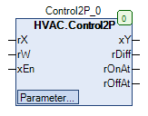

Control2P (FB)¶
FUNCTION_BLOCK Control2P
Short Description¶
2-point controller with actual value / set point / enable and configurable switching hysteresisThe direction of action (inverted/direct) is also adjustable.
Portrayal¶

Interfaces¶
Inputs¶
Name Datatyp
Range
Initial value
Function
rX REAL Analog actual value
rW REAL Analog setpoint value
xEn BOOL
FALSE: Controller disabled
TRUE: Controller enabled
Output¶
Name Datatyp
Range
Initial value
Function
xY BOOL Digital output signal
rDiff REAL Control deviation (rX - rW)
rOnAt REAL Absolute switch-on point ( rW + rSwitchOnPoint )
rOffAt REAL Absolute switch-off point (rW + rSwitchOffPoint)
Setpoints / Parameter¶
Name Datatyp
Range
Initial value
Function
rSwitchOffPoint REAL 0.5 Switch-off point relative to setpoint rW
rSwitchOnPoint REAL -0.5 Switch-on point relative to setpoint rW
xOffCondition BOOL FALSE Status of output xY at xEn = 0
xInitValue BOOL FALSE Status of output xY after restart
eAction eControlMode eControlMode.Inverted Direction of action of the controller (inverted = heating, direct = cooling)
eManModeB eManBin eManBin.Auto Operating mode for the digital output signal xY
Functional Description¶
Enable input xEn¶
xEn Controlling process
xY rDiff rOnAt rOffAt Notes
TRUE TRUE X X x x Enabling the control
FALSE FALSE xOffCondition ( if eManModeB = eManBin.Auto )
X x x Disabling the regulation
Digital output xY¶
Controlling process
xEn eManModeB xY Notes
FALSE TRUE eManBin.Auto FALSE Automatic operation - controlling process = FALSE
TRUE TRUE eManBin.Auto TRUE Automatic operation - controlling process = TRUE
X FALSE eManBin.Auto xOffCondition Automatic operation without enabling
X X eManBin.ManOff FALSE Manual operation - Off
X X eManBin.ManOn TRUE Manual operation - On
Controlling process¶
eAction Rule
eControlMode.Inverted rSwitchOnPoint < rSwitchOffPoint eControlMode.Direct rSwitchOnPoint > rSwitchOffPoint
xEn eAction rDiff xY Notes
TRUE eControlMode.Inverted < rSwitchOnPoint TRUE Automatic operation - inverted On
TRUE eControlMode.Inverted > rSwitchOffPoint FALSE Automatic operation - inverted Off
TRUE eControlMode.Direct > rSwitchOnPoint TRUE Automatic operation - direct on
TRUE eControlMode.Direct < rSwitchOffPoint FALSE Automatic operation - direct off
xEn eAction rX xY Notes
TRUE eControlMode.Inverted < rOnAt TRUE Automatic operation - inverted On
TRUE eControlMode.Inverted > rOffAt FALSE Automatic operation - inverted Off
TRUE eControlMode.Direct > rOnAt TRUE Automatic operation - direct on
TRUE eControlMode.Direct < rOffAt FALSE Automatic operation - direct off
Visualization¶
Codesys¶
- InOut:
Scope Name Type Initial Comment Input rX REAL Analog actual value
rW REAL Analog setpoint value
xEn BOOL Enable the Controller
rSwitchOffPoint REAL 0.5 Switch-off point relative to setpoint rW
rSwitchOnPoint REAL -0.5 Switch-on point relative to setpoint rW
xOffCondition BOOL FALSE Status of output xY at xEn = 0
xInitValue BOOL FALSE Status of output xY after restart
eAction eControlMode eControlMode.Inverted Direction of action of the controller (inverted = heating, direct = cooling)
eManModeB eManBin eManBin.Auto Operating mode for the digital output signal xY
Output xY BOOL Binary control signal for control
rDiff REAL Control deviation_Xw ( rX - rW )
rOnAt REAL Absolute switch-on point ( rW + rSwitchOnPoint )
rOffAt REAL Absolute switch-off point (rW + rSwitchOffPoint)